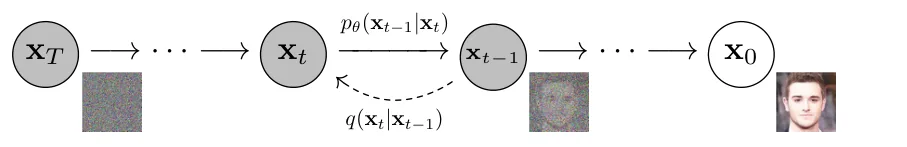
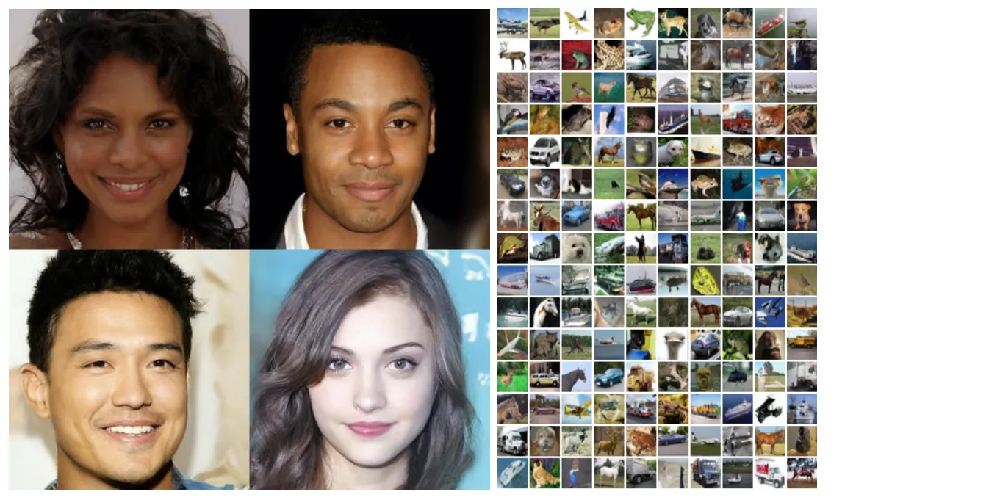
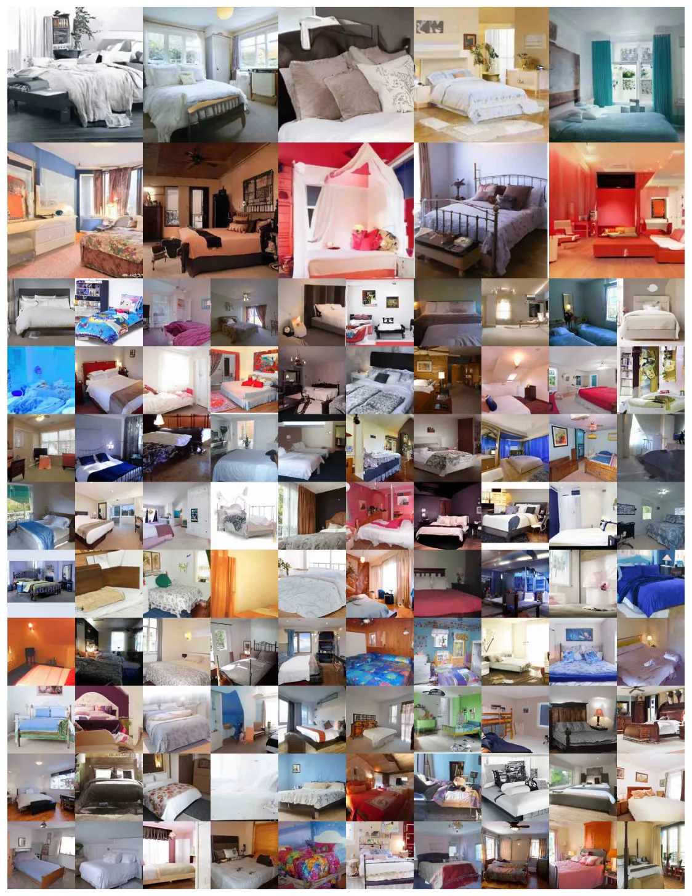
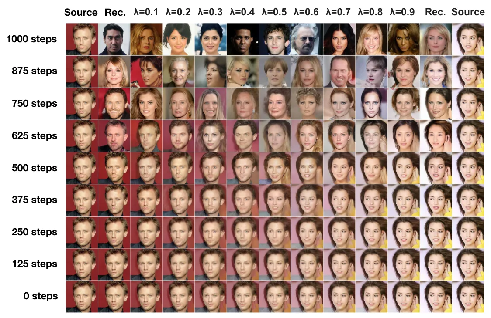

O problema: modelos generativos ainda buscavam qualidade e estabilidade
Em 2020, o campo de modelos generativos já tinha várias abordagens consolidadas. GANs (Generative Adversarial Networks) produziam imagens impressionantes, mas eram notoriamente instáveis de treinar. Modelos autoregressivos como o PixelCNN geravam imagens pixel por pixel, mas eram lentos. VAEs (Variational Autoencoders) eram estáveis, mas produziam imagens borradas. Cada família tinha seus trade-offs.
Modelos de difusão probabilística existiam desde 2015, mas ninguém havia demonstrado que podiam gerar imagens de alta qualidade. A ideia básica era simples: criar um processo que adiciona ruído gradualmente aos dados até destruí-los completamente, depois treinar uma rede neural para reverter esse processo. Mas os resultados práticos ficavam muito atrás das GANs.
Jonathan Ho, Ajay Jain e Pieter Abbeel, da UC Berkeley, decidiram investigar se o problema estava na formulação ou apenas na forma de treinar esses modelos. O paper que resultou dessa investigação se tornaria um dos trabalhos mais influentes em aprendizado de máquina dos últimos anos.
A ideia central: destruir e reconstruir em mil passos
Um modelo de difusão funciona em duas etapas. Primeiro, o forward process (processo direto) pega uma imagem real e adiciona ruído gaussiano em T passos. A cada passo t, a imagem fica um pouco mais ruidosa, seguindo um schedule de variâncias β₁, β₂, ..., βT. Depois de T passos, a imagem original vira ruído puro, indistinguível de uma amostra aleatória de uma distribuição normal.
O truque está no reverse process (processo reverso). Aqui, treinamos uma rede neural para fazer o caminho oposto: começar com ruído puro e remover o ruído gradualmente até reconstruir uma imagem nítida. Matematicamente, isso é uma cadeia de Markov onde cada transição é uma gaussiana condicional. A rede aprende os parâmetros dessas gaussianas — média e variância — para cada passo t.
Os autores usaram T=1000 passos em todos os experimentos. As variâncias do forward process foram fixadas como constantes crescendo linearmente de β₁=10⁻⁴ até βT=0.02. Esses valores foram escolhidos para serem pequenos em relação aos dados (normalizados entre -1 e 1), garantindo que os processos direto e reverso tenham formas funcionais similares enquanto mantêm a relação sinal-ruído no passo final (xT) o mais baixa possível.

Como treinar: variational bound e a conexão com denoising
Treinar um modelo de difusão significa otimizar um variational bound (limite variacional) na log-verossimilhança negativa dos dados. Isso é padrão em modelos de variáveis latentes. Mas os autores descobriram algo crucial: uma parametrização específica do reverse process revela uma equivalência entre modelos de difusão e denoising score matching com Langevin dynamics.
Em vez de fazer a rede prever diretamente a média μθ(xt, t) da gaussiana de transição, eles propuseram prever o ruído ϵ que foi adicionado. Essa mudança parece sutil, mas tem consequências profundas. Com essa parametrização, o objetivo de treinamento se torna simplesmente: minimize a diferença entre o ruído verdadeiro e o ruído previsto pela rede, ponderado ao longo dos T passos.
Mais especificamente, em vez de treinar no variational bound completo, eles usaram um objetivo simplificado que ignora os pesos da variância e foca apenas no erro quadrático médio do ruído previsto. Esse objetivo simplificado se revelou superior para qualidade de amostra, mesmo que tecnicamente não minimize o bound teórico da forma mais eficiente.
Arquitetura: U-Net com atenção e embeddings temporais
Para implementar o reverse process, os autores usaram uma U-Net como backbone, similar ao PixelCNN++ mas sem mascaramento. A U-Net é uma arquitetura convolucional com conexões skip que funciona bem para tarefas de imagem-para-imagem. Eles aplicaram group normalization em toda a rede.
Um detalhe importante: os parâmetros da rede são compartilhados entre todos os timesteps t. Para que a rede saiba em qual passo da difusão está, o timestep é codificado usando sinusoidal position embeddings (a mesma técnica usada no Transformer original). Isso permite que uma única rede aprenda a remover ruído em qualquer nível de degradação.
A arquitetura também inclui self-attention nas feature maps de resolução 16×16. Isso ajuda o modelo a capturar dependências de longo alcance na imagem, importantes para manter coerência global enquanto remove ruído local.
Resultados em CIFAR-10: superando GANs em qualidade
Os resultados em CIFAR-10 foram surpreendentes. O modelo alcançou um FID score de 3.17 quando avaliado contra o conjunto de treino — melhor que a maioria dos modelos na literatura, incluindo modelos condicionais por classe. O Inception Score foi de 9.46. Quando avaliado contra o conjunto de teste, o FID subiu para 5.24, ainda assim melhor que muitos modelos publicados.
Para contexto: FID (Fréchet Inception Distance) mede a distância entre as distribuições de features das imagens reais e geradas. Valores menores são melhores. Um FID de 3.17 representa qualidade visual muito alta, comparável ou superior às melhores GANs da época.
O gap entre treino e teste no codelength (a log-verossimilhança negativa, medida em bits por dimensão) foi de no máximo 0.03 bits/dim, comparável a outros modelos baseados em verossimilhança. Isso indica que o modelo não estava overfitting — um problema comum em GANs.

Ablation: o que realmente importa no treinamento
Os autores fizeram experimentos de ablation para entender quais escolhas de design importavam. Primeiro, compararam diferentes parametrizações do reverse process. Prever diretamente a média μ̃ funcionava bem apenas quando treinado no variational bound verdadeiro, não no objetivo simplificado. Prever o ruído ϵ, por outro lado, funcionava bem em ambos os casos, mas especialmente bem com o objetivo simplificado.
Tentar aprender as variâncias do reverse process (tornando Σθ(xt) parametrizado) levou a treinamento instável e pior qualidade de amostra comparado a usar variâncias fixas. Isso foi contra-intuitivo, já que teoricamente dar mais flexibilidade ao modelo deveria ajudar.
A conclusão: a melhor configuração era prever o ruído ϵ, usar variâncias fixas no reverse process, e treinar com o objetivo simplificado de erro quadrático médio. Essa combinação produziu as amostras de maior qualidade, mesmo não sendo a que minimizava o variational bound de forma mais eficiente.
LSUN: gerando cenas complexas em alta resolução
Em imagens 256×256 do dataset LSUN, o modelo gerou amostras de qualidade comparável ao ProgressiveGAN, uma das melhores GANs da época. Para quartos (LSUN Bedroom), o FID foi 4.90. Para igrejas (LSUN Church), foi 7.89. Esses números representam qualidade visual impressionante para cenas complexas com múltiplos objetos, perspectiva e iluminação.
O dataset LSUN é mais desafiador que CIFAR-10 porque contém cenas naturais em alta resolução. Gerar um quarto realista requer que o modelo entenda geometria 3D implícita, relações espaciais entre móveis, texturas consistentes e iluminação coerente. O fato de modelos de difusão conseguirem isso sugere que eles têm um inductive bias forte para dados de imagem.

Progressive coding: compressão com perdas de grosso a fino
Uma descoberta interessante foi interpretar o processo de amostragem como progressive lossy compression (compressão progressiva com perdas). Tratando os termos L₁+...+LT do variational bound como taxa (rate) e L₀ como distorção, o modelo de CIFAR-10 com melhor qualidade tinha taxa de 1.78 bits/dim e distorção de 1.97 bits/dim.
Isso significa que mais da metade do codelength lossless (sem perdas) era usado para descrever detalhes imperceptíveis da imagem. O erro quadrático médio dessa distorção era 0.95 em uma escala de 0 a 255 — quase imperceptível ao olho humano.
Os autores argumentam que o processo de amostragem dos modelos de difusão é um tipo de decodificação progressiva que se assemelha à decodificação autoregressiva, mas ao longo de uma ordenação de bits que generaliza vastamente o que é normalmente possível com modelos autoregressivos. Nos primeiros passos, o modelo gera estrutura grosseira; nos últimos, refina detalhes finos.

Limitações: velocidade e eficiência computacional
A principal limitação dos modelos de difusão é a velocidade. Gerar uma única imagem requer T=1000 avaliações da rede neural, uma para cada passo do reverse process. GANs geram imagens em um único passo forward. Isso torna modelos de difusão muito mais lentos tanto em treinamento quanto em inferência.
Os autores não exploraram formas de reduzir o número de passos sem perder qualidade. Trabalhos posteriores (como DDIM) mostrariam que é possível pular passos e gerar com 50 ou até 10 avaliações, mas isso não estava no escopo deste paper.
Outra limitação: embora o paper mostre resultados em imagens até 256×256, não há experimentos em resoluções maiores. Também não há avaliação de geração condicional (por exemplo, condicionada em classes ou texto), que se tornaria crucial em aplicações posteriores.
O que o paper não mostra
O paper não compara diretamente com todas as GANs estado-da-arte da época. Por exemplo, StyleGAN2 já existia e produzia imagens de faces em resolução muito maior. A comparação se limita principalmente a FID scores reportados na literatura, não a experimentos head-to-head controlados.
Não há análise de modo collapse ou diversidade das amostras além das métricas padrão (FID e Inception Score). Também não há estudo de interpolação no espaço latente além da figura de interpolação coarse-to-fine, que é mais uma demonstração qualitativa que uma análise sistemática.
Os experimentos de ablation cobrem as principais escolhas de design, mas não exploram exaustivamente o espaço de hiperparâmetros. Por exemplo, não há variação sistemática do número de passos T ou da forma do schedule de variâncias βt. O paper também não discute requisitos de memória ou tempo de treinamento em detalhe.
Impacto e direções futuras
Os autores concluem que modelos de difusão têm inductive biases excelentes para dados de imagem e expressam otimismo sobre sua utilidade em outras modalidades. Eles mencionam possíveis aplicações em compressão de dados, aprendizado de representação, e até em sistemas de aprendizado por reforço.
Olhando retrospectivamente, esse otimismo se justificou completamente. Este paper estabeleceu as bases para DALL-E 2, Stable Diffusion, Imagen e toda a revolução de geração de imagens por IA que veio depois. A conexão com score matching que os autores descobriram se tornou central na teoria de modelos generativos.
O código foi disponibilizado publicamente no GitHub, facilitando reprodução e extensão do trabalho. Isso acelerou a adoção da técnica pela comunidade. Em termos de impacto científico, este é um dos papers mais citados em machine learning dos últimos anos.
Quanto a preocupações éticas, os autores reconhecem que modelos generativos podem ser usados para criar deepfakes e perpetuar vieses dos dados de treinamento. Eles notam que imagens geradas por CNNs ainda têm falhas sutis detectáveis, mas melhorias nos modelos podem tornar detecção mais difícil — uma preocupação que se materializou nos anos seguintes.
O que fica
- Modelos de difusão aprendem a gerar imagens removendo ruído progressivamente em mil passos, alcançando FID de 3.17 em CIFAR-10 — qualidade comparável ou superior a GANs.
- A chave é prever o ruído adicionado em vez da imagem diretamente, criando uma conexão com denoising score matching que melhora drasticamente a qualidade das amostras.
- O processo de geração funciona como compressão progressiva: primeiros passos criam estrutura grossa, últimos passos refinam detalhes — mas requer 1000 avaliações da rede, muito mais lento que GANs.
- Apesar de log-likelihoods não competitivas, a alta qualidade visual mostra que modelos de difusão têm inductive bias forte para imagens, estabelecendo bases para DALL-E e Stable Diffusion.
Paper original: Denoising Diffusion Probabilistic Models
Comentários
Nenhum comentário ainda. Seja o primeiro.